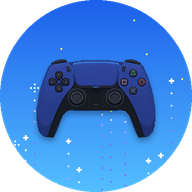

PS-5 Controle Test
Web · beta
Versão para iPhone e iPad · Developed by MeoWDeV MOD
Nenhum controle detectado
Conecte o DualSense e aperte qualquer botão.
Botões
Analógicos
Gatilhos
L2
0%
R2
0%
Vibração
Testar vibração
Resultado
0 / 5
Aperte todos os botões, gire os dois analógicos em círculo completo e aperte os gatilhos até o fim.
Zerar testes
Eventos
Instalar como app
No Safari, toque em
Compartilhar
(□↑) →
Adicionar à Tela de Início
. Ele abre em tela cheia e funciona offline.
Esta versão web lê botões, analógicos e gatilhos. Calibração, som, luzes, touchpad, giroscópio e USB direto existem só no app Android.
Controle
Validação